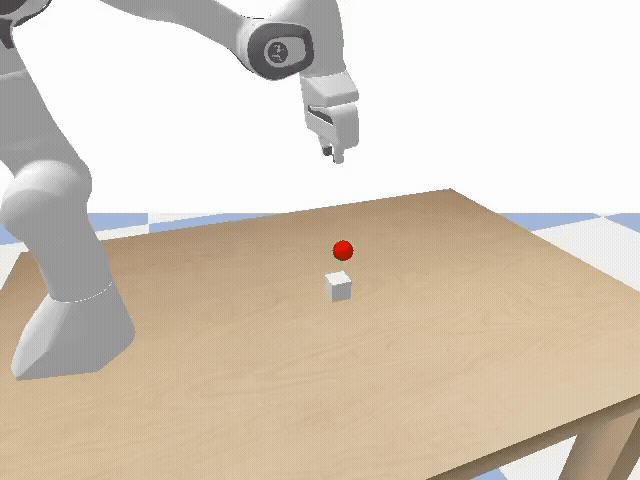
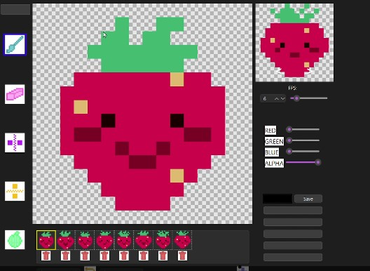
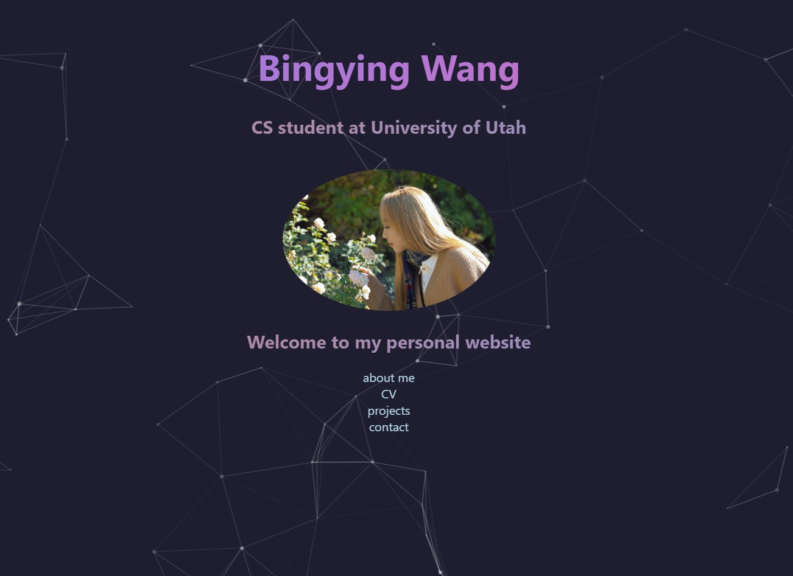

Projects
Below are a selection of projects that reflect my interests in reinforcement learning, robotics, systems, and educational tools.
Reinforcement Learning for Franka Panda Pick-and-Place
Python, PyBullet, Gymnasium, Soft Actor-Critic (SAC)
I design a custom Gymnasium environment for a Franka Panda robotic arm in PyBullet to perform pick-and-place tasks. The project focuses on reward shaping, curriculum design, and domain randomization so that policies can generalize across object positions and perturbations. I am currently exploring hierarchical control by separating grasping and placement policies and coordinating them with a higher-level switching policy.
This project is part of my research in the LL4MA Lab at the Kahlert School of Computing.

Sprite Editor for 2D Game Development
C++, Qt, Team Project
A desktop sprite editor built in C++ and Qt that supports layer management, onion-skinning, and animated preview for pixel art workflows. I implemented core UI interactions and helped design the animation preview and onion-skin features to support iterative game asset creation.
This project was developed as a team; my teammates include Eden Parish, Isaac Koizumi, Nate Fierro, Ethan Nguyen, and Munkh-Orgil Purevdorj.

Personal Portfolio Website
HTML, CSS, JavaScript
A personal academic website built with a custom design featuring an animated “ink-style” rainbow background, responsive layout, and separate pages for my CV, projects, and background. The goal is to present my research interests and technical work in a clean and visually distinctive way.

Data Wrangling and Exploratory Analysis (DS 2500)
Python, Pandas, Data Visualization
Course project for DS 2500 involving data wrangling and exploratory data analysis. I cleaned and combined real-world datasets, performed descriptive statistics, and produced visualizations to study trends and patterns in the data. The project emphasized reproducible analysis and clear communication of findings.
You can view the full project report and a writing sample below: